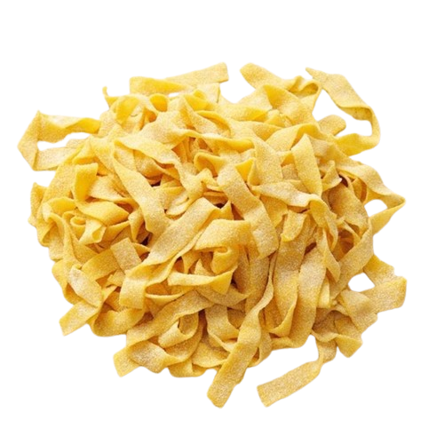

Pasta

Description: A fundamental dish, boiled pasta serves as the foundation for numerous recipes.
Ingredients:
- 1 pound (450 grams) of pasta
- 4-6 quarts of water
- 1 tablespoon of salt
Equipment:
- Large pot
- Colander
- Fork or spoon
Instructions:
- Boil the Water: Fill a large pot with 4-6 quarts of water and bring it to a rolling boil over high heat.
- Add Salt: Add 1 tablespoon of salt to the boiling water.
- Cook the Pasta: Add 1 pound of pasta to the boiling water. Stir occasionally to prevent sticking. Cook according to the package instructions, usually 8-12 minutes, until al dente (firm to the bite).
- Drain: Once cooked, drain the pasta in a colander.
- Serve: Serve immediately with your favorite sauce, or simply toss with olive oil and a sprinkle of salt.